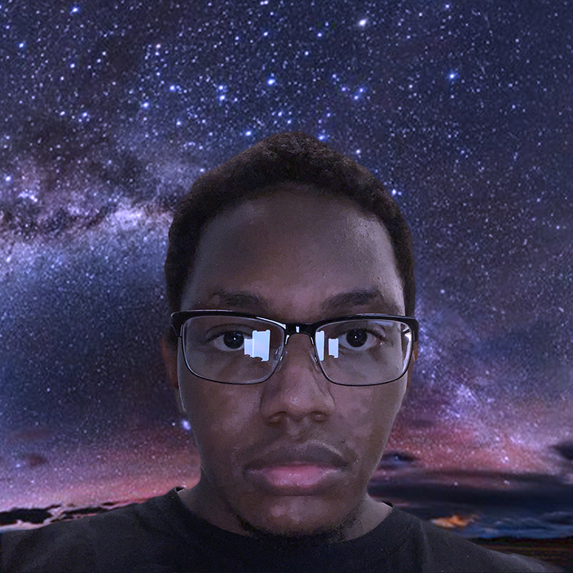
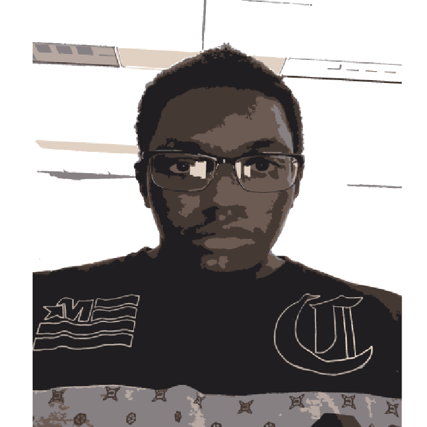

Audio project: Women running from killer in the woods
Visit my p5 sketch
Click to view my Programming p5 Sketch

Self Portait Drawing: This a drawing I created at home and had nothing better to do

Still Life Image of glass: This image was created during my drawing studio class using various types of charcoal

Image created in Digital Imaging class